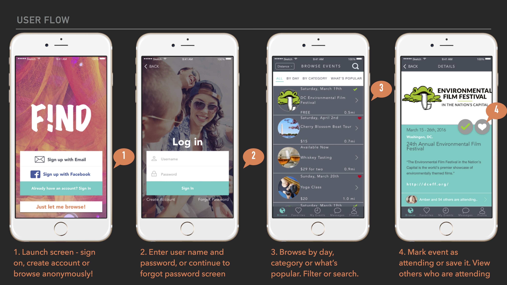
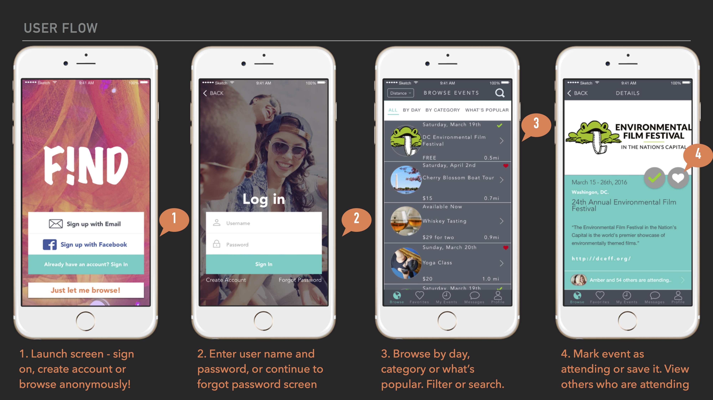
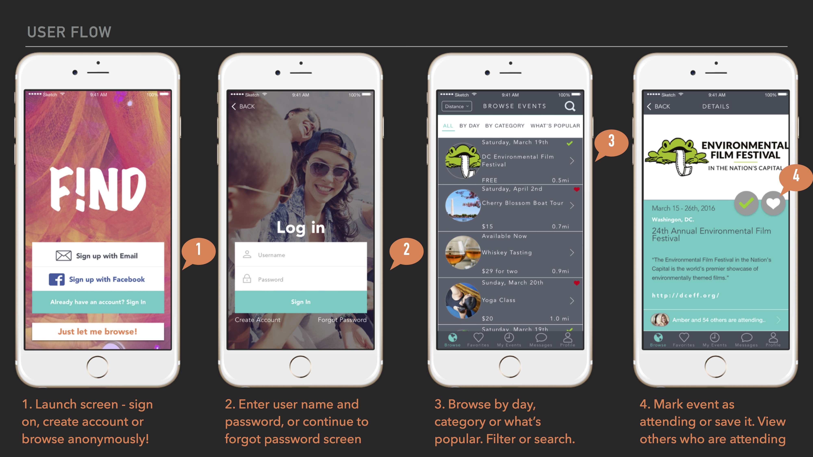
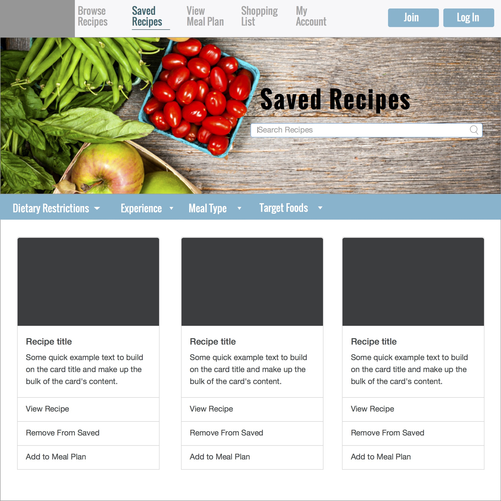
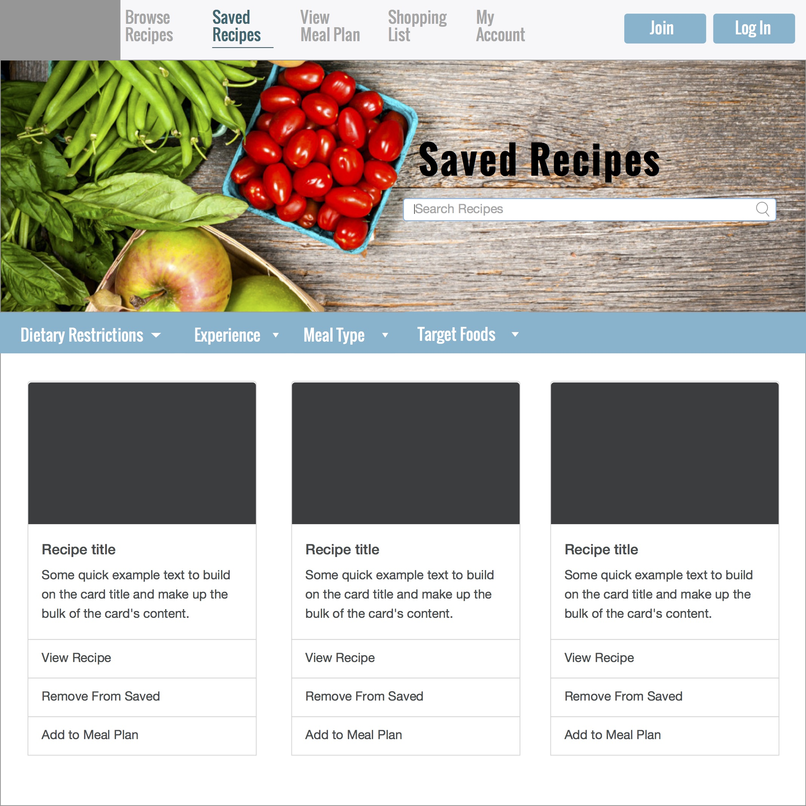

Washington, DC | Inspiring change through positive interactions
Portfolio
User Experience Design, Front-End Development
F!ND
UX Design
Chewzer
UX Design
F!ND
How might we make discovering a city a seamless experience?
Moving to a city is difficult. Finding unique events to go to is time consuming, and finding friends who share these interests can be frustrating.
Date: March 2016
Course: General Assembly
Category: UX Design

Chewzer
Making your life simpler, one meal at a time.
A meal planner that can be as detailed or as generic as you need. Chewzer adapts to your preferences and plans accordingly
Date: Summer/Fall 2016
Category: UX Design
User Research
Research Goals
What are their nutrition goals?
Do people struggle meeting their nutrition goals?
Do people struggle coming up with new recipes that reflect these goals?
How do people organize their grocery list/approach?
HYPOTHESES
Young Professionals
Parents
College Students
USER DEMOGRAPHICS
Shoppers have a pre-set budget, but often get off course.
Shoppers aimlessly wander the store searching by meal ingredients.
People need an easy way to come up with new, goal-based meals.
USER INTERVIEW QUESTIONS
How old are you?
What is your profession?
How many times a week do you cook your own meals?
Are you on a diet?
What is your level of cooking experience?
How many people are you cooking for?
How technologically savvy would you consider yourself?
How strictly would you adhere to a food planner?
Would you need reminders in order to stick to the meals we’ve planned?
Would you like your meals to be planned daily or for the entire week?
What would you like to be targeted (e.g. protein, vegetable/fruit servings, carbs, etc)?
How many meals would you like to be suggested for each day?
Would you like to count snacks between meals as well?
Would you like diet options (vegan, paleo, vegetarian, etc)?
How often do you grocery shop?
Do you group your grocery list?
Do you struggle to come up with new recipes?
Do you plan your meals by nutrition?
What are the current ways you plan your meals?
Do you factor in eating out?
Do you set a budget?
How many grocery stores do you shop at?
Walk or drive to the store?
Are you aware of sales before entering the store?
Would you want to plan on an app/website/both?
RESULTS
COMPETITIVE ANALYSIS
My Fitness Pal
Pros
Tracks nutrition
Large database of food/restaurant
Incorporates fitness goals
Allows you to add own recipes
Intuitive
Reminder option if you haven’t logged meals
Cons
No meal planning aspect
No recipe suggestions
Must upgrade for a lot of features
Yummly
Pros
Suggests recipes based on what food you like
Unclear what the defined path is
Don’t have to create an account
Connect with other accounts
Can add recipe to shopping list
Suggestions based on location
Cons
Not many new recipes daily
Directions are opened in browser window
Dislike the accordion scroll style
Doesn’t have a planner
Doesn’t track nutrition/fitness goals
USER PERSONAS
Steve, 35
Steve is a 35-year-old father who commutes into the city each day for work. Him and his wife, Kim, have two children in elementary school for whom they pack lunch for each day. Kim and Steve typically pack their lunch 4 times per week. Monday through Friday they eat dinner at home and on the weekends they typically go out for dinner as a family. They eat three meals plus snacks each day and would like those planned accordingly. They aim to have dinner a healthy balance of vegetables and protein, but other than that do not have any dietary restrictions. They do not have a set budget, but are active about finding deals at their local super market. Both Steve and Kim and intermediate level cooks.
Alice, 26
Alice lives alone in the city and cooks for herself at least 5 days a week. Her diet is dairy free. She enjoys trying new recipes and usually eats whatever she had for dinner the night before for lunch – but is open to other alternatives. She likes eating a simple breakfast as part of her morning routine. She works out regularly and thinks that being more careful about her diet with help her lose a couple extra pounds. She goes to the grocery store weekly and plans her meals for the week each Sunday. She is a pretty skilled cook, and appreciates challenging recipes.
Annie, 22
Annie is a 22-year-old accountant living with three other roommates. She is a vegetarian and often struggles to find new and exciting recipes. She typically comes up with a few recipes she’ll want to make for the next two weeks and wings the rest when she gets to the store. She enjoys having two meals planned per day and eats out a 1-2 times per week. She is still beginning to master cooking for herself every day and wants to start with easier recipes. Annie is a busy person and wants to be able to cook her meals in less than 30 minutes. She has a budget of $50 per week.
 



 
